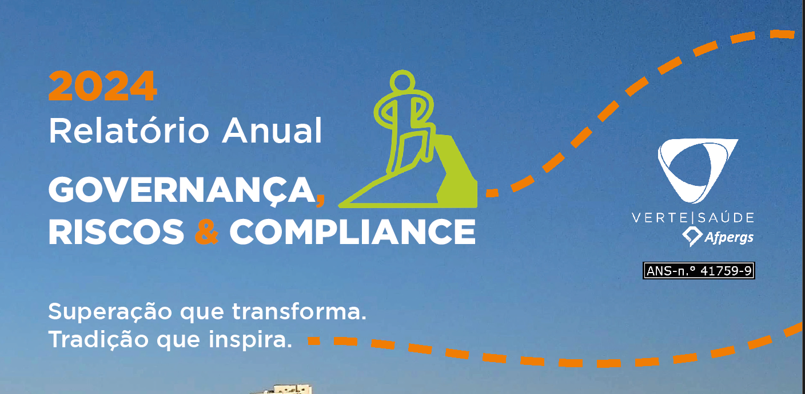

Contexto do projeto
Design de embalagem para caixa coletora de tampinhas plásticas, uma ação de responsabilidade socioambiental da Verte Saúde. O desafio foi criar uma peça funcional e visualmente atrativa, que comunicasse o propósito da ação de forma clara para colaboradores e visitantes da organização.


Contexto do projeto
Conjunto de peças gráficas variadas produzidas para a Verte Saúde: banners, cartazes, flyers e materiais de apoio para diferentes ocasiões. Cada peça com briefing próprio, mas todas mantendo coerência com a identidade visual da organização.


Contexto do projeto
Criação de identidade visual e peças gráficas para o podcast da campanha Novembro Azul da Verte Saúde, focado em saúde masculina. O projeto incluiu capa do podcast, posts de divulgação para redes sociais e materiais de apoio para cada episódio, mantendo coerência com a campanha maior.


Contexto do projeto
Design de post institucional para comunicar a atualização dos canais de atendimento da Verte Saúde nas redes sociais. Peça com hierarquia visual clara, fácil de ler no feed mobile e alinhada ao manual de identidade da organização.


Case em destaque · Design Editorial
Projeto gráfico completo do Relatório de Atividades 2024 da Verte Saúde, publicação anual entregue ao conselho diretivo e parceiros estratégicos da organização.
O desafio foi transformar dados institucionais, registros de eventos e narrativas de impacto em uma publicação visualmente coesa e profissional. Responsável por todo o design: capa, diagramação interna, hierarquia tipográfica, tratamento de imagens e identidade editorial do documento.
Resultado: uma publicação de prestação de contas que também funciona como peça de comunicação institucional, demonstrando profissionalismo e transparência da organização para seus stakeholders.

Design Editorial · Verte Saúde · 2024
Relatório de Atividades 2024
Projeto gráfico completo: diagramação, hierarquia visual e identidade editorial. Entregue ao conselho diretivo da Verte Saúde em 2025. Inclui identidade visual, tipografia, paleta de cores e estrutura editorial do relatório anual.
Ver PDF completoContexto do projeto
Material gráfico desenvolvido para o SIASC 2024, Seminário Interno de Atividades da Verte Saúde. O projeto incluiu peças de divulgação, materiais de apoio para o evento e comunicação visual para o dia do seminário, mantendo alinhamento com a identidade institucional da organização.


Contexto do projeto
Baristo é uma marca de café fictícia criada como exercício de identidade visual. O projeto explora a construção completa de uma marca — do naming à aplicação nos produtos — imaginando como a identidade se comportaria em embalagens, papelaria e materiais promocionais de uma cafeteria contemporânea.
O desafio foi criar uma linguagem visual coesa que transmitisse sofisticação e acolhimento, traduzindo a essência do café artesanal em uma identidade aplicável e consistente.